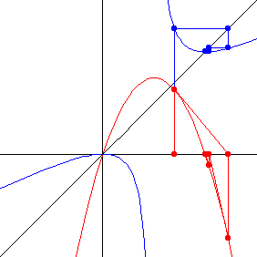

| On the left is the graph of the
logistic map | |||
| On the right is graph of the Newton function
| |||
| Newton's method is iterated in (a), graphical iteration is applied in (b). | |||
| |||
| To emphasize that both generate the same sequence of points, below are the two graphs superimposed, Newton's method in red, graphical iteration in blue. | |||
|  |
Return to real Newton's method.